The Daedric Lords
The Daedric Lords are each deities associated with Oblivion. The name 'Daedra' comes from the in-game split, when Mundus was created. Those who did not take part were the Daedra- meaning "Not-Ancestor", from the language of the first race, commonly known as the Ehlnofey. The Daedra thought it was foolish to put their power into a world, and then seperate themselves- and thus the Daedra are those who didn't take part in Mundus' creation, and instead took part in making their own worlds, where they could keep their power- becoming the planes of Oblivion. The Daedra are not a specific thing, but more a collection- a Dremora is the opposite of an Auroran, and differs from a Xivilai. Most Daedric Lords have their own subset of Lesser Daedra- though in the current Era of the lore, any being that inhabits Oblivion naturally is known as a Daedra. The Lesser Daedra are
The Lords Themselves
Each Daedric Lord controls a different sphere, and all go by various names. There are 17 in total- none have absolute control over the sphere, but instead specialise in such. They are genderless, and formless- though they can manifest themselves in a way that usually connotates a gender.
Azura
Azura- or Azurah, is often considered one of the 'good' Daedra- though she is brutal to those who incur her wrath. Azura's sphere is most commonly seen as change- she represents both dusk and dawn, the change between night and day. It's this aspect of change that lead to Azura's biggest two changes to the world- changing the very races. The Chimer were a race of pale-skinned elves that lived in Morrowind- this can be seen by the Tribunal, immortal elves who ascended to divinity through the Heart of Lorkhan. Enraged by their actions, Azura cursed the Chimer race- turning them ashy-skinned and red eyed, creating the Dunmer in the process. The other race was the Khajiit- who she created out of the Bosmer. The truth behind this is unknown, but the Khajiit say Azura was granted the ability by the Universe.
Artifacts
Azura has two known artifacts- Azura's Star, an infinite soul gem that never shatters after use, and the Ring of Azura, a ring that grants the ability to see in the dark, at all times- a direct gift from Azura to the Neravarine, the protagonist of Morrowind
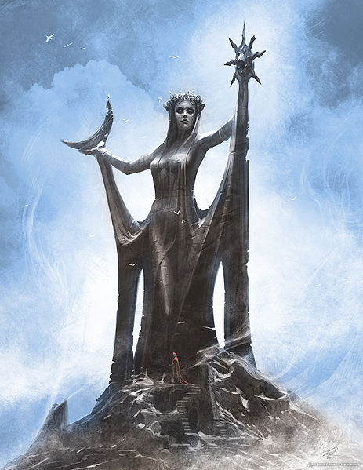
Boethiah
Boethiah is the Daedric Prince of conspiracy, deceit and violent overthrow of authority. Boethiah is directly responsible for many things- namely the Chimer living in Morrowind, the Orsimer becoming a race, and Malacath being created as a Daedric Prince. The story goes that Boethiah tricked an Aedra called Trinimac into being devoured by Boethiah- who then spoke with Trinimac's voice- convincing the Chimer to go over to Morrowind. When Boethiah let Trinimac out again, Trinimac had changed due to the corruption of the Daedra, and became Malacath- and all of Trinimac's followers became the orsimer, with the same corruption.
Artifacts
Boethiah has 3 artifacts to his name- the Ebony Mail, a piece of armor that drains the life of everyone surrounding it's wearer- Goldbrand, a burning sword rewarded to the champion of the Tournament of Ten Bloods, where a member of each race is pitted against one another in a death match- and finally, a shield called Fearstruck, which wasn't all too powerful- being a normal shield
Clavicus Vile
Clavicus Vile is the Daedric Prince of pacts and wishes. Inspired by the more refined depiction of demons- his most famous is that of the Rueful Axe. After a mage and scholar had his daughter infected with Lycanthropy, he begged, and pleaded for Clavicus Vile to give him a cure- and Clavicus Vile accepted- giving the mage an Axe. Clavicus is often depicted as foolish in his own right- often imbueing significant amounts of his power in different things. Barbas is an example of this, a lesser daedra who houses most of Clavicus' power, and Umbra is another example- a sword imbued with Vile's power that gained sentience, and split from it's creator, constantly trying to escape him. Despite the constant mistakes he seems to make, Clavicus still has his power, and seems content with what he has- desiring to simply mess with mortals as he does, then any grand sweeping plans like some of his kin
Arifacts
Clavicus Vile has 5 known artifacts- the Bitter Cup, a sacred grail, lost to the current ages- with the power to heighten your strengths- yet worsen your weaknesses. The next is the Feyfolken, a quill that helps the author write the most amazing stories- though soon whispers into your mind, leading to insanity. The Masque of Clavicus Vile was gifted to a disfigured noble- and simply makes it's wearer more persuasive- yet confirms their allegience to Vile. The Rueful Axe and Umbra were both mentioned above- the Rueful Axe being a gift to the wizard, Sebastian Lort, to 'cure' his daughter of Lycanthropy, and Umbra being a sword that developed it's own sentience and escaped it's master
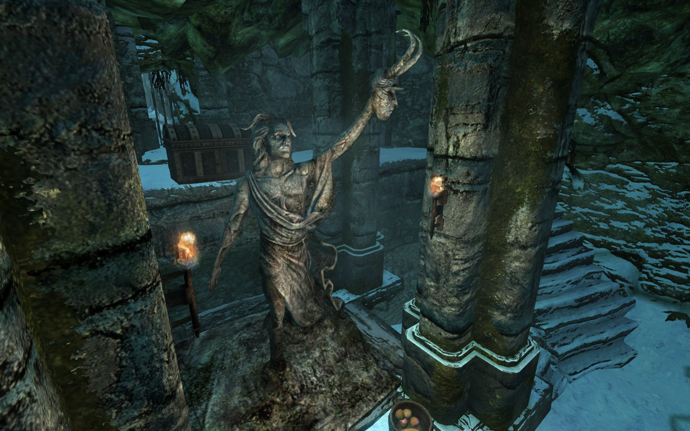
Hermaeus Mora
Hermaeus Mora is the Lord of Fate, Knowledge, Learning and Memory- and his goal is to collect all knowledge, and know all things. Neutrality is key with Mora- he doesn't care about good or evil, he cares only for gaining more knowledge. He has his largest appearance in the DLC for Skyrim, Dragonborn- in which he plays an integral part. Hermaeus Mora helps the Dragonborn kill his predecessor, Miraak, and grants the Dragonborn more and more in the way of power, in exchange for knowledge of the Skaal- a nordic tribe that has always kept it's secrets from him. Mora often helps grant knowledge to anyone who asks- because such knowledge comes with it's own risk. Mora is heavily inspired by Lovecraft- as seen in the tentacles motifs, and the "forbidden knowledge" aspect of him
Artifacts
Hermaeus Mora has two major artifacts- the Oghma Infinium, a tome made of the skin of each race, another reference to Lovecraft, that grants forbidden knowledge- usually shown in-game as giving it's reader a collection of in-game skills. His other artifact is a collection of books known as the Black Books, books with forbidden knowledge that drag the reader into Apocrypha- Mora's personal plane of Oblivion
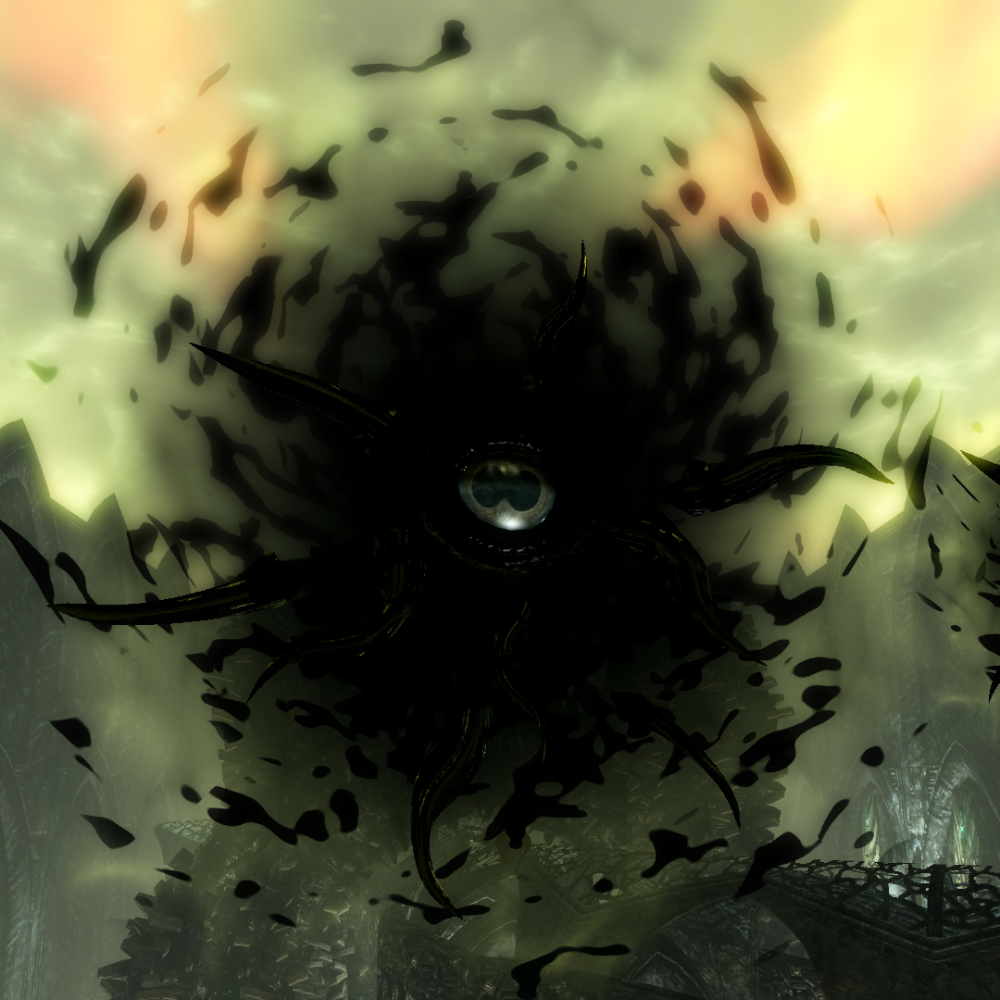
Hircine
Hircine is the spirit of the Hunt- and the patron of all sports that the Daedra play. Most of those involve the chase, and sacrifice of mortals- which Hircine also has patronage of. Hircine isn't particularly evil- he just believes firmly in the hunt, that the strong should eat the weak, and that if a mortal can't prove themselves stronger then Daedra- they are destined to be devoured. He is the creator of all the were-races, mainly Werewolves, who are destined for a life hunting with the prince in the afterlife. Hircine is the most widely accepted Daedra to worship- every society barring Imperial respects him to a degree. However, Hircine simply doesn't care for the worship- he wants the hunt.
Artifacts
Hircine's most famous artifact is the Cuirass of the Savior's Hide- or just the Savior's Hide, an armor piece that resists all forms of magic cast against it, and the Ring of Hircine, which allows a werewolf to control their urges, and transform at will, instead of under the moonlit nights
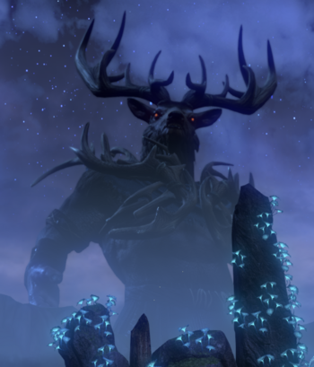
Jyggalag/Sheogorath
Describing Jyggalag without Sheogorath is a difficult task- as they fundamenetally were the same person. Two sides of the same coin- the story goes that Jyggalag was the strongest of all the Daedra- so the rest of his sided with one another in an unprecedented turn, to turn the Daedric Prince of Order to his opposite- a Daedric Prince of Chaos. Jyggalag knows everything that has ever happened- and will happen, firmly believing in determinism, where everything is already decided. At the end of every Era, Jyggalag was allowed to take back control from his insanity, and swept over the Shivering Isles to return them to order, though reverted back once he had completed. The character of Oblivion, the Hero of Kvatch, frees Jyggalag from this curse, and mantles Sheogorath- becoming the new Daedric Prince of Madness. Jyggalag is not commonly seen, but Sheogorath is- Sheogorath is madness incarnate. He can help or hinder anything, and is known for doing just that- he parties in the minds of the insane, brings forth elementals made of cheese to smite his enemies, and creates forks of unimaginable power (or lack thereof). Sheogorath often visits the other Lords, and shows his immense power that he once wielded as Jyggalag, still- being able to beat the other Daedric Lords in their own spheres, as seen when he bested Hircine at a hunt, beat Vaermina in trickery, and tricked Malacath into killing his own son.
Artifacts
Jyggalag has no artifacts- only a sword that contains no power of it's own, and is simply a blade to wield. Sheogorath, however, has many different artifacts. The most famous is the Wabbajack, something that can transform a creature into something else- be it turning a human into a giant, or a goat into cheese..the effects are random. The staff of the Everscamp is another one- a powerful staff that summoned 4 scamps that simple did nothing but follow the person around, while being immortal. The Spear of Bitter Mercy is another, which is an oversized fork gifted to the Nerevarine for killing a Netch- an oversized floating jellyfish- with a fork. Finally, there is the Folium Discognitum- which distills the insights of madmen, granting it's wielder immense power, with surprisingly no known drawbacks- Sheogorath is easy to get power out of, though the drawbacks are usually severe.
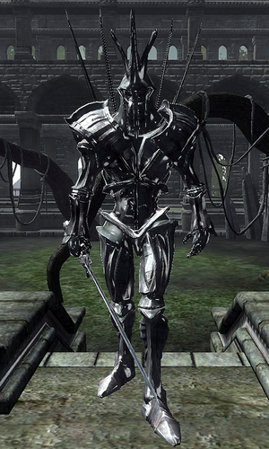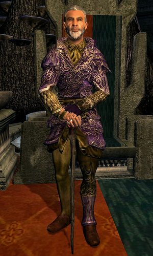
Malacath
Malacath was once the Aedra known as Trinimac- until he was devoured and corrupted by Boethiah, and released as Malacath. The patron of all oaths, and the keeper of the Bloody Curse, Malacath protects all who are ostracized from their lands. Malacath is a brutal Daedra, and often enjoys simply hurting things- though his younger age compared to the other Daedra reduces his influence amongst the races, instead patroning orcs- followers transformed at the same time as him
Artifacts
Malacath has two artifacts- Volendrung and Scourge. Volendrung is an incredibly oversized hammer, that retains a surprisingly lightness to it. It is said the hammer was thrown by a chieftain across the continent, and where it landed would be their new home- it landed in Hammerfell, the origin of the name, and the new city was known as Volenfell. Scourge is a mace-like weapon with the ability to banish Daedra back to their planes of Oblivion- yet also summon Daedra to the wielders call
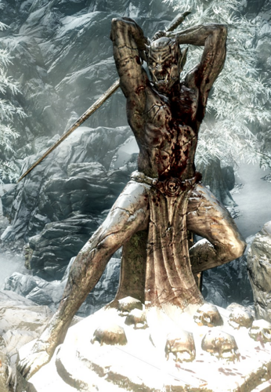
Mehrunes Dagon
Mehrunes Dagon is the most destructive of the Daedric Princes- encompassing Change and Destruction both. Dagon is the harbinger of the end, and commonly doesn't do much other then destroy. He is the most outright evil of the Daedra- and is the enemy of all mortal races. Dagon believes that Tamriel is a plane of Oblivion that rightfully belongs to him. The plot of Oblivion, the 4th installment, is that Dagon is invading Tamriel, and his gates are opening across the continent. This is called the Oblivion Crisis, and was only stopped by Martin Septim and the Hero of Kvatch, who mantled Akatosh, the 'head' Aedra, ending the Septim bloodline. Dagon repeatedly tries similar things- and will try again. In earlier eras, Dagon helped the battlemage Jagar Tharn seal the Emperor away in Oblivion, and helped Jagar Tharn take the Emperors appearance, acting like him for years. The Mythic Dawn is a cult dedicated to Mehrunes Dagon, believing that he will grant them paradise- something achieved by Mankar Cameron, the leader of the Mythic Dawn, in...so many words at least.
Artifacts
Dagon hates dealing with mortals- and mortals usually hate dealing with him, though it is not unheard of- the Mysterium Xarxes is a book written with razors and forged in death, penned by Dagon himself to be a book of tenants for Cameron, and the way to Paradise. The other is a more personal artifact- the Mehrunes Razor. A dagger that can instantly kill a creature and trap it's soul in Oblivion- gifted to his most loyal champions in return for their service- on the condition that they spread chaos and destruction with the blade
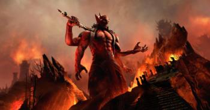
Mephala
Mephala is the Daedric Lord of lies, secrets, murder and sex- though no one knows if this is actually true. Anything Mephala says can't be taken as truth. Mehala is the patron of the Morag Tong, a Dunmer assassins guild with influence over Tamriel- and is sometimes quoted as being the Night Mother of the Dark Brotherhood, though this is very likely untrue, due to the connection to Sithis that the Night Mother has. Mephala is the only Daedric Lord that directly appears as genderless- though usually with a womanlike voice. Mephala is also the patron of all spider daedra. Other then that, Mephala is surprisingly lacking in information- though that may be because she is a secret, waiting for it's chance to strike
Artifacts
2 artifacts are claimed by Mephala- the Ebony Blade, a sword that feeds on betrayal, and grows stronger with each betrayal. To counter this, a wizard cast a charm that it would never stay with one bladesman for too long, leading to the blade being often passed along. The Ring of Khajiit is the other one- with disputed heritage, granting thieves many bonuses in secrecy and lies, for sneaking and persuasion.
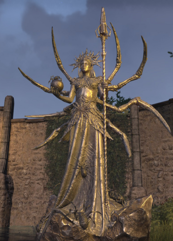
Meridia
Merdia is the most common 'good' Daedra- and another who was not born a Daedra, but instead became one. Once an Magna Ge, one of the Aedra who followed Magnus, the god of Magic, into the sun. Meridia supposedly bent the light of Magnus within herself, becoming a Daedra in the process- but retains her good, being a champion against the undead, and harbinger of light. Meridia, however, is not a champion of mortals- she cares only for the destruction of the undead, and lands on the side of good without doing much good. Her servants, and personal Daedra, the Aurorans, helped the Ayleids in the Human-Ayleid war, in which the Humans rebelled against their slave-masters- a conflict the humans eventually won.
Artifacts
Meridia is the other Lord who is claimed to have created the Ring of Khajiit- and it's true creator is unknown. If that is not counted as hers, the only relic that counts as hers is Dawnbreaker. The Dawnbreaker is a powerful sword given only to Meridia's champions- upon striking an undead, it releases a burst of explosive light, that sears all undead in it's realm- a tool befitting the champions of the scourge of undead
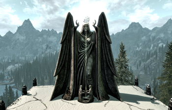
Molag Bal
Molag Bal claims over the spheres of domination and enslavement. Molag Bal desires to bring all mortals under his sway- through domination and enslavement, and spreading the seeds of chaos amongst the ranks of mortals. Molag Bal is the creator of vampires, having given the original vampires his 'blessing' to go out and dominate mortals- hence the vampiric charm. Molag Bal often tries to merge Nirn and Coldharbor into one, similar to Mehrunes Dagon- however they take two very different ways of doing so. The shrines of Molag Bal are usually adorned in some form of torture methods- and his priests are typically incredibly sadistic. Another famous aspect of Molag Bal is his rivalry with Boethiah, with the two constantly warring through the proxy of their priests
Artifacts
Molag Bal only has one attributed artifact- the Mace of Molag Bal. A heavy mace that bears his insignia along it, it drains both magic and stamina from its victims, giving it to the wielder. The mace was smithed by an Orcish blacksmith, who was tricked into Coldharbour, and enslaved by Molag Bal
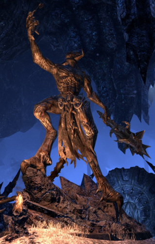
Namira
The Lady of Decay, Namira, claims over the sphere of anything disgusting- spiders, insects and various other things. Namira isn't widely worshipped, as it is hard to worship something that innately brings disgust- though one sect of people widely consider Namira their patron- cannibals. Namira appears throughout history repeatedly. Her most famous apprentice is Wheedle, a 14th child of a king who saved a vagabond- who was truly Namira. Namira granted him disease, pity and disregard- so he could beg easily for money, be pitied, and disregarded as a person so he could hear the secrets of the city
Artifacts
Namira only has a single artifact to her name- the Ring of Namira, a horrific ring that causes it's wearer to begin to enjoy the taste of human flesh, and be strengthed by it's consumption
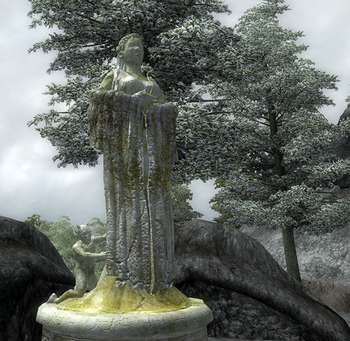
Nocturnal
Nocturnal is another of the more neutral Daedra- hardly evil by any standards, but certainly not good, Nocturnal is the patron of darkness and the night- and grants blessing to thieves. Also known as Lady Luck, it is Nocturnal who thieves pray to at night. Nocturnal claims to be the oldest of the Daedric Princes- and was once part of the original Void, though that is less then confirmed in all but her owrshippers tongues. Nocturnal usually appears as a woman in a hooded cloak, with two Nightingale birds on each shoulder- or each wrist.
Artifacts
Nocturnal has two major artifacts- the first being the Grey Cowl of Nocturnal, a mask that erases it's wearers identity. They will forever become the 'Grey Fox', and immortal thief, who is simply just a collection of people the mask has been handed down from person to person. The second is the most powerful of all the Daedric Artifacts- the Skeleton Key. Owned by multiple people throughout history, the Skeleton Key has the power to bypass any obstacle- even having the ability to bypass the barrier between Oblivion and Mundus with incredible ease- and can even unlock a persons individual potential.
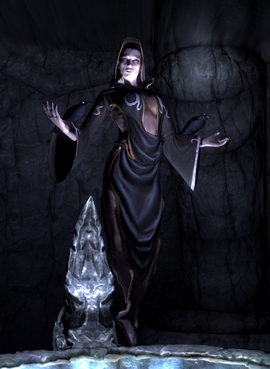
Peryite
Peryite is considered the weakest of all the Daedric Princes- even though he takes on the appearance of a dragon. The Lord of Pestilence, Peryite represents disease, mainly- though his weakness meant he is often left the tast of ordering the lesser Daedra. He takes on a similar appearance to Akatosh, the head of the Aedra- in a sort of mockery to the Aedroth. Peryite, due to control over disease, is often considered pure evil- all disease on the mortal world is said to come from him.
Artifacts
Peryite, due to his lack of connection to mortals, doesn't have many artifacts- only having a single one that he didn't even create- just 'owns'. When the clan who founded Volenfell fought against a wizard known as Shalidor, they constructed a magical shield that can absorb magic and dispell it, in order to fight the battle safely- and Peryite has taken a liking to the artifact.
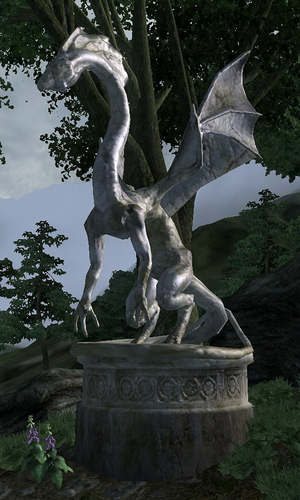
Sanguine
Sanguine is the only Daedra who can unequivocably be called 'good'. While he has control over sins, such as lust, sloth, gluttony and greed, he doesn't show these aspects all too much. In fact, he is most known for playing simple practical jokes on mortals that he sees and meets. Of course, Sanguine has his fun at others expense- and he drags mortals down into sins all the same by temptation, he is usually a grateful host who rarely harms his guests- and simply helps them enjoy themselves. His quests in-game usually involve practical quests, and in Skyrim, he even manifested directly himself to have a drinking party with the protagonist- showing how happy he is to enjoy himself
Artifacts
Despite his indulgance with mortals, Sanguine is only attributed one artifact he has given out to his 'champions'- the Sanguine Rose. It is a simple relic, that summons a Dremora for it's user, as a servant, in order to help with any tasks
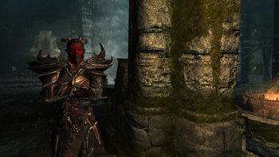
Vaermina
The final of the Daedric Lords is Vaermina- also known as the Dreamweaver. Vaermina rules over nightmares, terror and memories, and often appears as a female mage. Anyone who meets Vaermina is apparently immune to fear after- as nothing in the mortal world can compare to the fear of being in her presence. Vaermina very rarely appears throughout the history of the series. Vaermina's influence over dreams is powerful enough where it can be a way of moving through the world itself- if Vaermina wills it, any of your dreams can become a reality
Artifacts
Vaermina is another who only has a single artifact- the Skull of Corruption. An artifact of immense power- though that is common for the Daedric Artifacts, the Skull has the ability to create a 'nightmare' clone of something, which will viciously attack it's original with murderous intent
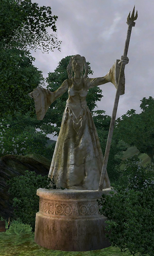
The Lesser Daedra
The rest of the Daedra are all known as the Lesser Daedra- and are numerous in their types. Appearance is a matter of choice, and can always change when the Daedra itself does, rather then a genetic thing like humans have.
Humanoids
The Humanoid Daedra are usually the smartest of the lesser Daedra- though pale in comparison to the Daedric Lords still. These include the Dremora, an honor-bound clan that serve Mehrunes Dagon, the Golden Saints and the Dark Seducers, golden-armored and black-armored servants of Sheogorath who war with one another for Sheogorath's favour, the Knights of Order, crystalline soldiers of Jyggalag, Aurorans, the humanoid daedra serving Meridia, Xivillai, the most intelligent of the humanoid daedra, who serve Mehrunes Dagon, and finally the Xivkyn, Daedra created by Molag Bal as a fusion of Dremora and Xivilai.
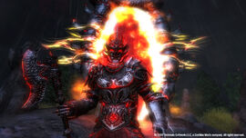
Reptillians
Some Daedra take on the appearance of reptillian creatures- usually dinosaur like in appearance, with more ferocity then a humanoid form. This includes the Daedroth of Molag Bal, large bipedal crocodiles, and the Clannfear of Dagon, which are similar to ceratopsid dinosaurs.
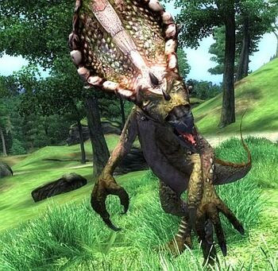
Atronachs
Atronachs are some of the most common Daedra to see in the mortal world- with them being the most popular form of conjuration. The main forms of atronachs are flame atronachs, frost atronachs and storm atronachs, each lookling like rock fused with their element- though cheese atronachs also exist under Sheogoraths patronage
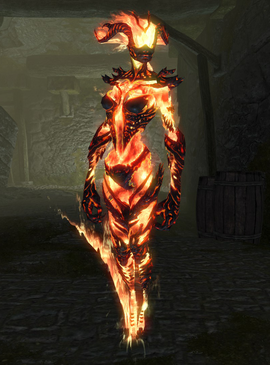
Others
The rest of the known Daedra don't fit in the aforementioned categories- like the Winged Twilights, who are similar to a Harpy in appearance, who have blue skin, and large tails, under Azura's patronage. Spider Daedra are Mephala's personal Daedra, and are large spider-centaurs. Ogrim are Malacath's Daedra, large, unintelligent troll-like beings. "Hunger" is the name of Boethiah's Daedra, with unknown apperance- but immense magical ability. Scamps, Vermai and Herne are all various types of scamp- resembling imps or goblins, serving various different Daedra, and finally, Hermaeus Mora's person Daedra- Lurkers and Seekers, large tentacle-motifed beings.
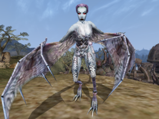
No personal data is collected by this website. No cookies are stored by this website. All rights to the Elder Scrolls franchise are reserved to Bethesda Studios. This is a non-profit fan page.